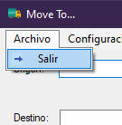
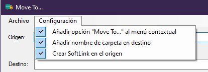
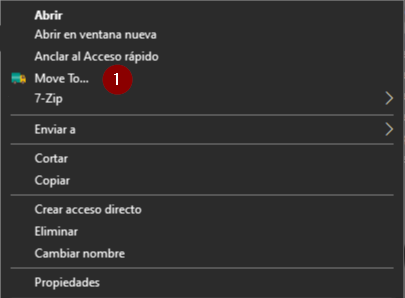

El menú principal se compone de:
Archivo

Desde Archivo podemos salir de la aplicación
Configuración

Permite habilitar las siguentes opciones:

Ejemplo
de "Move To..." en el menú contextual
- Añadir opción "Move To..." al menú contextual: Permite que al
presionar el botón derecho sobre una carpeta, se muestre la opción
"Move To..."
- Añadir nombre de carpeta en destino: Añade el nombre de la
carpeta origen en la carpeta destino. La copia se realizará en una
carpeta con el mismo nombre que la de origen pero en la ruta
destino.
- Crear SoftLink en origen: El programa, una vez
movida la carpeta, creará un enlace suave (ver mklink) en la carpeta origen que permite que
las aplicaciones sigan usando la carpeta como si todavía existiese
en el origen.